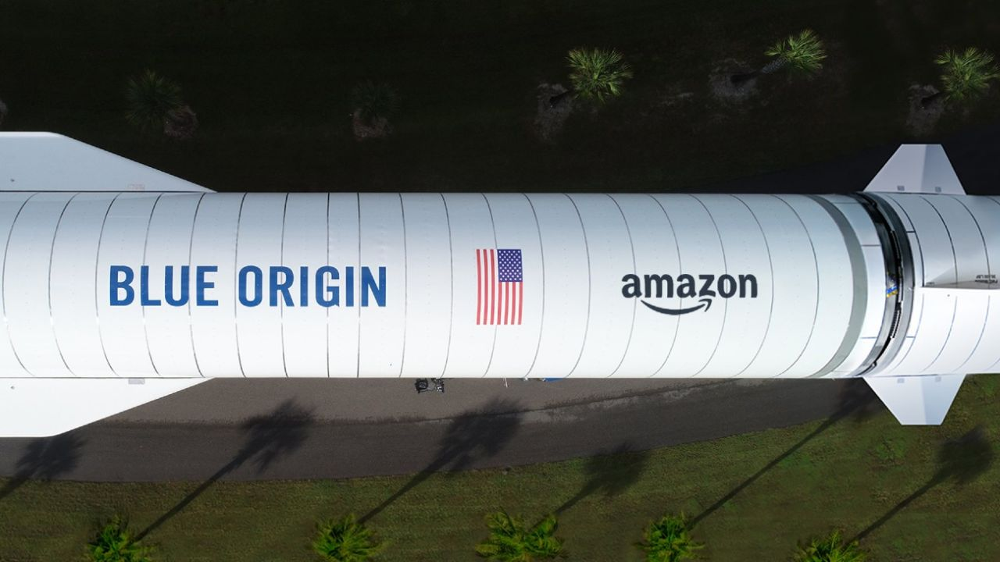
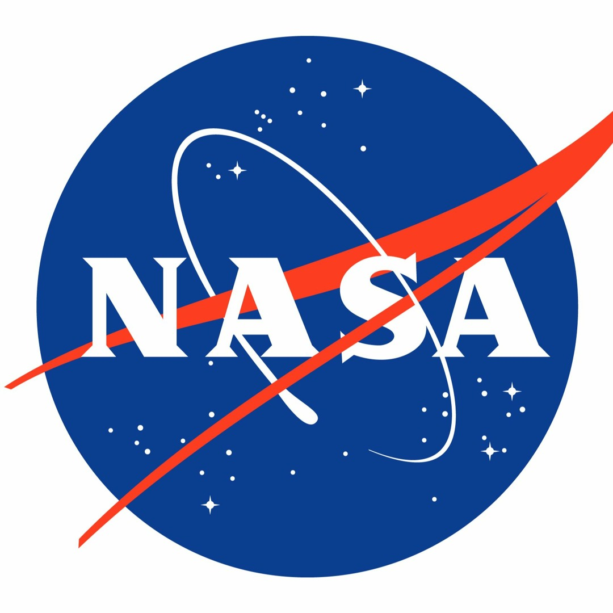

Hoy en día, muchas empresas privadas están liderando avances astronómicos impresionantes.
Aquí te presento el Top 5 de las más reconocidas y lo que hacen:
SpaceX (EE. UU.)
Fundador: Elon Musk
Año de fundación: 2002
Misión principal: Hacer posible la vida humana en otros planetas.
Logros:
Primer cohete reutilizable (Falcon 9).
Lanzamiento del cohete más poderoso del mundo (Starship).
Misiones tripuladas a la Estación Espacial Internacional (EEI).
Proyecto Starlink (internet satelital global).
Blue Origin (EE. UU.)

Fundador: Jeff Bezos
Año de fundación: 2000
Enfoque: Turismo espacial y cohetes reutilizables.
Logros:
Vuelos suborbitales con la cápsula New Shepard.
Desarrollando el cohete New Glenn para llegar a órbita.
Apuesta por crear colonias humanas en el espacio.
NASA (EE. UU.)

Nombre completo: National Aeronautics and Space Administration
Año de fundación: 1958
Aunque es pública, es fundamental mencionarla.
Logros:
Primeros humanos en la Luna (Apollo 11).
Grandes telescopios como el Hubble y el James Webb.